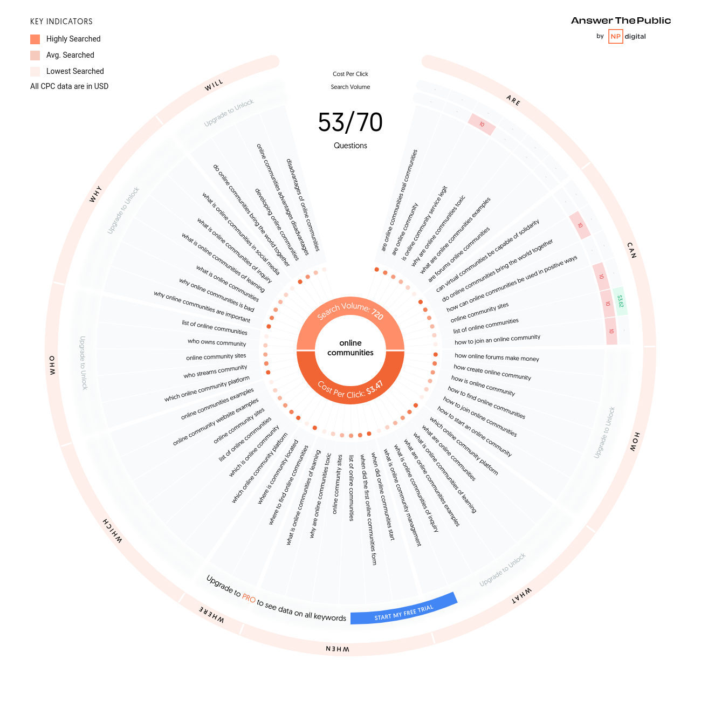

My initial ideas for a choice of topic were as follows:
NARROWED DOWN TOPICS
DIGITISATION
AI
DIGITAL COMMUNITY/ IDENTITY
upon reflection my idea website idea is...
"How does your online community effect you?"
In the next few weeks I intend to narrow down the topic for my website, but to begin, I will use this as guidance and a starting point for my research
Part 1 + 2: Booleans and Logging Search Terms
To begin my research I used tools such as the Glasgow Uni library and Google Scholar to find resources.
My keyword searches included:
My intention with these searches was to find academic resources which answered the questions of what does "online community" mean, subjectively and objectively? What are examples of online identity? What are the impacts of online identity/ social media presence?
Part 3: Reflection
I found the use of the truncation help vastly further my search to a much broader extent. My first set of keywords was extremely useful in giving highly cited academic papers. However, it was a very broad search and so I quicky realised I needed to use more niche language to get information and literature in more specialised and catered areas. But, I did find that in these searches being so broad, I could use citations from broader papers to find information on subjects I could potentially use. Bearing this in mind, the concept of 'design thinking' is a repetitive process of trial and error. So too, throughout this research I will be interchanging methods and ideas to suit what I want to produce and how I want it to be perceived/ who is perceiving it.
I found other searches I used were no help at all for the same reasons of being too broad, but with the information that came up, there was nothing that was helpful as a resource.
Part 4: Depth Exploration
Visualisation of different questions that could be asked surrounding a google search of "online communities" on the AnswerThePublic search engine.
To begin my research I used tools such as the Glasgow Uni library and Google Scholar to find scholarly articles which were informative on PIMS and to investigate misuse of data, and the effects on social media users. I will continue to log my resources on the metadata and justification table excel spreadsheet provided on the class Moodle.